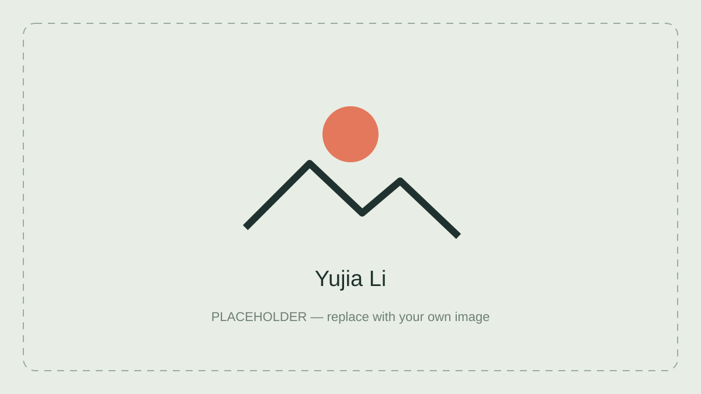

锂电池健康状态评估
负责从实车 BMS 数据中筛选可比充电片段，基于容量衰减估算电池 SOH。

项目素材 · 查看详情了解方法与结果
查看项目 ↗
我是宁波诺丁汉大学电气工程及其自动化专业的本科生。我喜欢探索不同领域的问题，并在解决问题的过程中学习新知识。我的项目与研究经历涵盖电路与嵌入式系统、锂电池健康评估以及机器学习。
曾赴英国诺丁汉大学进行一学年交流学习。
查看项目 ↓负责从实车 BMS 数据中筛选可比充电片段，基于容量衰减估算电池 SOH。
项目素材 · 查看详情了解方法与结果
查看项目 ↗完成 50 W 变换器的建模、控制设计与实验验证。

整体电路 · 详情页包含设计记录与测试视频
查看项目 ↗结合模拟信号采集、STM32 与 CPLD，实现心率和血氧测量及数据显示。

项目素材 · 查看详情了解方法与结果
查看项目 ↗参与化合物活性预测模型构建，并使用 SHAP 分析关键特征。

项目素材 · 查看详情了解方法与结果
查看项目 ↗搭建并验证 MRI 肺部图像自动分割流程。

分割示例 · 详情页包含实验环境与交流记录
查看项目 ↗中国船舶集团第七一五研究所 · 电路调试实习生
2026.07–2026.09
参与仪器核心板块的电路调试与性能验证，配合完成高温环境测试。公开展示细节待确认。
第十九届挑战杯“揭榜挂帅”擂台赛 · 特等奖（团队）
第十届数维杯大学生数学建模挑战赛 · 三等奖
第二届中国大学生飞盘联赛总决赛 · 第七名
英国大学生飞盘联赛 · 第九名
初级攀岩指导员证书 · 班长 · Peer Mentor
04 / CONTACTS
邮箱待确认后添加。
GitHub ↗